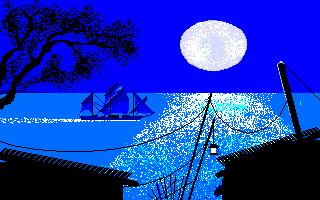

My Childhood Days

It was a tough day for me. I was sitting in the exam hall, answering what I thought (at that moment) the hardest exam of my life. I was in the 5th grade and that was the day of "Drawing" exam. For some unknown reasons, God had been a little too stingy while pouring artistic qualities into me. Sometimes I wonder, maybe the jug from which He was pouring these qualities had only a few drops left in it by the time my number came in the queue. Anyway, to take care of this deficiency, I had made some arrangements with Mitali, whose roll number was next to mine in the class. Mitali was extremely good at drawing (she was probably the 1st in the queue at God's Artistic Quality Distribution Department). According to our agreement, Mitali was supposed to draw the drawings for me in the test, and, in exchange, I was supposed to help her out in the math test. Lady Luck, however, didn't seem to be on my side that day, since the teacher was constantly making rounds in our zone, rendering it impossible for me to exchange papers with Mitali. As time passed by, I grew more and more impatient till I finally gave up hopes and started answering the test all by myself. As far as I remember, among other tasks, I was supposed to draw an "eggplant". In my last minutes effort to draw it perfectly, I ended up drawing an entity, which to a great extent resembled an open umbrella. The stem of my eggplant was looking more like the "U" shaped handle of an umbrella. Lest the teacher be confused with my drawing, I wrote (in capitals) "EGGPLANT" beside the figure and drew an arrow from the text to the figure. The next week, the teacher declared the results (of the drawing test) in the class, in which I had barely managed to pass. What was more embarassing though was the subsequent display of my paper in the class for public view and the endless mockery I was subjected to by my friends throughout that day.
I spent most of my formative years in a small town near Khurda, named Tangi. The town was located amidst a series of hills and plateaus. My house (the Govt quarters in which we used to stay) had its back towards one such splendid hill (in fact, it was a tiny mountain, named Gobardhan). The magnificent scenic views of the place had brought into me an appreciation of mother nature's serene beauty and had probably unleashed my mind to a world of rich, unfathomable imagination. When I was in the 7th-8th grade, I used to read a lot of world literature series (Vishwa Saahitya Grantha Maalaa) adventure classics such as Ivanhoe, Three Musketeers, Rob Roy, Kenilworth etc. (abridged versions). These novels had a great impact on my imagination too. I used to go into the plateau behind the Gobardhan hills and walk among the tall, slender Eucaliptus trees, imagining myself as a knight travelling on horseback in the forest, going to rescue the (imaginary) pretty princess locked inside the fort.
I would get a novel from the school library and would "hide" it inside the thickest text book available and read it at home during the evening "study" hours. Sometimes, when my mother came into my study room to check my activities, I would immediately turn the pages on to the boring, dull geography book (which was the thickest of all text books I had at the time, inside which the thin novel used to maintain a low profile). However, this seemingly safe manner of novel-reading could not escape the ever suspecting eyes of my mother, who was rather surprised to notice my sudden interest in studying "geography" for five consecutive days. The "real" cause was ultimately detected and I was kept under strict probation for a few days (during which I had to study near the kitchen under the direct supervision of my mother while she prepared the dinner).
As is the case with most kids, my life has been greatly influenced by my parents. My father had (and still has) an incredibly great sense of humor. Apart from various other things, the most important thing I've ever learnt from him is the art of keeping "cool" and acting steady under pressure. I still haven't mastered the art to the extent he has. He is a very joyous person, who never seems to have any problem in life. Everyday, the most pleasant moment at our home used to be the dinner time - when all of us at home would sit to eat and enjoy listening to jokes and interesting experiences from my father. My mother, on the other hand, is a very perseverant person who firmly believes in perfection. Under her supervision, once I used to be very punctual,systematic, neat and clean. These virtues, to some extent, seem to have faded away with time, placing myself a bit on the messy and untidy side in my hopelessly careless bachelor life. My mother (as everybody else's would) still writes to me to be regular in taking food & sleep and to take proper care of health. Well, thanks mother, I'll try my best!
I could go on like this for ever, narrating the eventful formative years, but refrain from doing so because of (i) time and space constraints :-) and (ii) inappropriateness of some of the events as far as narrating those in Ornet is concerned :-)
I do not believe in dwelling in the past. However, past is important in the sense that it always gives us some chance to learn something from it. It very often provides the opportunity to take corrective measures for similar or related situations in future. Besides, it definitely acts as a reference point to one's deeds. After all, we as a human society, the position where we are now has only been possible owing to our learning from the past and building upon it. Otherwise, we would still be reinventing the wheel and would never have moved beyond that point. However, my purpose of describing the above incidents was not because of the philosophical-sounding reasons I mentioned just now; it was because it sometimes just feels good to bring back the old sweet memories and to share them with others - it's just as simple as that !
--
Your comments are always welcome...


| This Page Has Been Accessed | Times Since |
|---|
was last updated on :